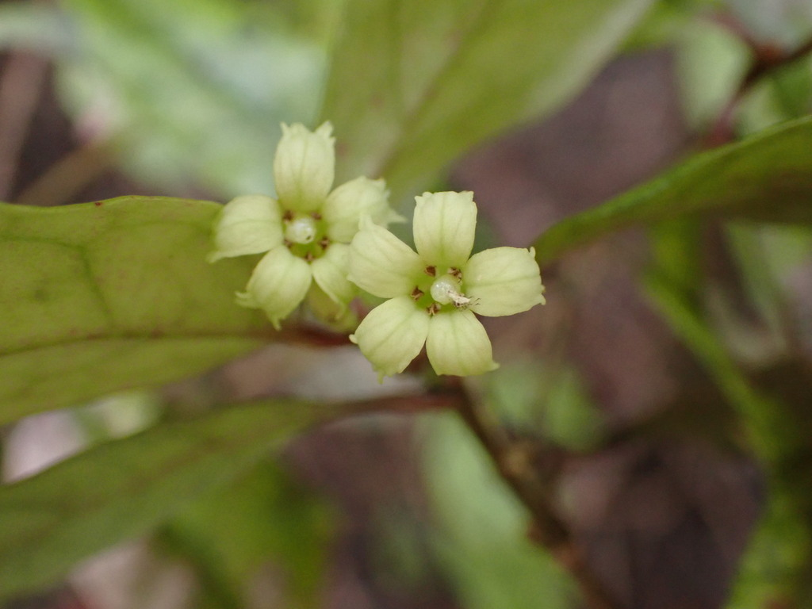

Alseuosmiaceae
Alseuosmia Family
Alseuosmiaceae is a small family of flowering plants in the order Asterales, native to the Southern Hemisphere. It comprises shrubs and small trees found in New Zealand, New Caledonia, New Guinea, and eastern Australia. Members are known for their often leathery, simple leaves, highly fragrant tubular or bell-shaped flowers, and fleshy berry fruits.
Overview
The Alseuosmiaceae family is relatively small, containing about 3 to 5 genera and around 10 to 13 species. Its distribution is restricted to parts of Australasia and the Pacific: Alseuosmia is endemic to New Zealand, Periomphale to New Caledonia, Crispiloba to Queensland (Australia), and Wittsteinia (whose placement is sometimes debated) occurs in Victoria (Australia) and New Guinea. These plants typically grow as understory shrubs or small trees in cool, moist temperate or subtropical rainforest environments.
Members of this family are evergreen woody plants, often sparsely branched. They are particularly noted for their flowers, which are often intensely fragrant (hence the name Alseuosmia, meaning "perfumed grove") and possess a tubular or funnel-shaped corolla. Leaf shape can be quite variable even within a species (heterophylly). The family is considered one of the basal lineages within the large Asterales order.
Alseuosmiaceae has little direct economic importance. Some species of Alseuosmia might be occasionally cultivated in gardens within New Zealand for their fragrant flowers and attractive form, but they are not widely known or utilized elsewhere. Their significance lies primarily in their unique evolutionary position and contribution to the biodiversity of their native forest habitats.
Quick Facts
- Scientific Name: Alseuosmiaceae
- Common Name: Alseuosmia family (no widely used common name)
- Number of Genera: 3-5
- Number of Species: Approximately 10-13
- Distribution: New Zealand, New Caledonia, New Guinea, Eastern Australia (restricted ranges)
- Evolutionary Group: Eudicots - Asterids - Asterales
- Current Date: March 29, 2025
Key Characteristics
Growth Form and Habit
Evergreen shrubs or small trees, often sparsely branched. They inhabit forest understories.
Leaves
Leaves are alternate or sometimes appear opposite or whorled due to clustering at nodes. They are simple, petiolate, and often leathery (coriaceous). Leaf margins are variable: entire, serrated, or lobed, sometimes showing heterophylly (different shapes on the same plant). Stipules are absent or represented by minute glands. Resin ducts are often present.
Inflorescence
Flowers are typically solitary in leaf axils or borne in small axillary clusters (fascicles). They are often pendulous (nodding).
Flowers
Flowers are usually bisexual, actinomorphic (radially symmetrical) or sometimes slightly zygomorphic (bilaterally symmetrical), and characteristically strongly fragrant (sweetly scented).
- Calyx: Consists of 4-7 sepals fused into a short tube at the base, with persistent lobes.
- Corolla: Consists of 4-7 petals fused to form a distinct floral tube (tubular, funnelform, or campanulate/bell-shaped) with spreading or recurved lobes. Corolla color varies from greenish, cream, yellow, to pink, red, or deep maroon.
- Androecium: 4-7 stamens, equal in number to and alternating with the corolla lobes. They are attached to the corolla tube (epipetalous). Anthers typically dehisce via longitudinal slits.
- Gynoecium: Ovary is usually half-inferior or inferior (sometimes reported as superior?), composed of 2 (rarely 3) fused carpels. It typically has 2 locules with axile placentation. Ovules are few to numerous per locule. There is a single style topped by a capitate or slightly lobed stigma.
Fruits and Seeds
The fruit is a fleshy berry, globose or ovoid, typically ripening to red or dark purple/black. It is crowned by the persistent calyx lobes and contains few to many seeds.
Seeds are small, with smooth or slightly patterned seed coats, and contain fleshy endosperm.
Chemical Characteristics
The family is known to produce iridoids, a class of compounds common in asterids. Resin canals are often present in vegetative tissues. The strong floral fragrance is due to volatile organic compounds, though specific compositions may vary.
Field Identification
Identifying Alseuosmiaceae relies on recognizing the combination of shrubby habit, specific leaf features, highly fragrant tubular flowers, berry fruit, and restricted geographic distribution:
Primary Identification Features
- Habit and Location: Evergreen shrubs or small trees in cool, moist forests of NZ, NC, NG, or E Australia.
- Alternate Leaves: Leaves typically arranged alternately, though sometimes clustered appearing whorled/opposite. Simple, often leathery.
- Highly Fragrant Flowers: Flowers (often solitary or few in axils) emit a strong, sweet scent.
- Tubular/Bell-shaped Corolla: Flowers have petals fused into a distinct tube with 4-7 lobes.
- Half-Inferior/Inferior Ovary (Usually): Ovary positioned below or partly below the point of attachment of floral parts.
- Berry Fruit: Fruit is a fleshy berry (often red or dark), crowned by persistent calyx lobes.
Secondary Identification Features
- Variable Leaf Margins: Check for entire, serrated, or lobed margins, possibly varying on the same plant.
- Flowers with 4-7 Parts: Note the number of sepals, petals, and stamens.
- Epipetalous Stamens: Stamens attached to the inside of the corolla tube.
- Absence of Stipules (or minute).
Seasonal Identification Tips
- Year-round: Evergreen habit and leaf characteristics (alternate, simple, leathery, variable margins) help narrow possibilities within their range.
- Flowering Season: Often spring to summer (variable by location). The fragrant, tubular flowers are the most distinctive feature when present.
- Fruiting Season: Following flowering (summer to fall/winter). Look for the small, fleshy berries crowned by the persistent calyx.
Common Confusion Points
Within their specific habitats, confusion might arise with members of other families possessing tubular flowers or berries:
- Ericaceae (Heath family): Some Southern Hemisphere members (e.g., Epacridoid subfamily like Dracophyllum) can be shrubs/trees with alternate leathery leaves. However, flowers are often urn-shaped (urceolate), typically 5-merous, ovary usually superior, and fruit often a capsule or berry without the intense fragrance of Alseuosmiaceae.
- Rubiaceae (Coffee family): A large family including shrubs/trees, but typically with opposite leaves and usually interpetiolar stipules (stipules between the petioles). Flowers can be tubular, but ovary is always inferior, and fruit type varies (drupe, berry, capsule, schizocarp).
- Campanulaceae (Bellflower family): Also in Asterales. Many herbs/shrubs with alternate leaves. Flowers often bell-shaped (campanulate), typically 5-merous, ovary inferior, but fruit is usually a capsule (rarely a berry). Often produce milky latex (absent in Alseuosmiaceae).
- Pittosporaceae: Shrubs/trees common in Australasia. Leaves usually alternate, simple, often leathery. Flowers typically 5-merous with distinct petals (not fused into a long tube), superior ovary, and fruit usually a woody capsule with sticky seeds (not a fleshy berry).
The combination of alternate simple leaves (no stipules), intensely fragrant tubular/bell-shaped flowers (4-7 parts), usually half-inferior/inferior ovary, and berry fruit is key for Alseuosmiaceae.
Field Guide Quick Reference
Look For:
- Shrub/small tree (NZ, NC, NG, E Aus forests)
- Alternate, simple, often leathery leaves
- No stipules (or minute)
- Highly fragrant flowers
- Flowers solitary/clustered in axils
- Corolla tubular/bell-shaped (4-7 lobes)
- Ovary half-inferior/inferior (usually)
- Fruit a berry with persistent calyx
Key Variations:
- Leaf margins: Entire, serrated, lobed
- Flower color: Greenish, yellow, cream, red, maroon
- Number of floral parts (4-7)
- Leaf shape (heterophylly possible)
Notable Examples
The family consists of only a few genera, primarily found in New Zealand and surrounding regions:

Alseuosmia macrophylla
Toropapa / Karapapa
A shrub endemic to the North Island of New Zealand, representing the largest genus Alseuosmia. Known for its variable, glossy, leathery leaves (margins entire to deeply lobed) and extremely fragrant, pendulous, reddish or cream tubular flowers borne in spring. Grows in forest understories.

Alseuosmia pusilla
(Small Alseuosmia)
Another New Zealand endemic species of Alseuosmia, typically smaller and more slender than A. macrophylla, found in both North and South Islands. It has smaller leaves and small, very fragrant, dark red or maroon flowers.

Crispiloba plectophylla
(No common name)
A shrub or small tree endemic to the rainforests of northeastern Queensland, Australia. Represents the genus Crispiloba. It has alternate, simple, often wavy-edged or toothed leaves and produces fragrant, creamy-white, tubular flowers followed by reddish berries.

Periomphale sp.
(New Caledonian Genus)
Represents the genus endemic to New Caledonia. Species in this genus are shrubs or small trees found in the island's forests, sharing the family characteristics of fragrant, tubular flowers and berry fruits.
Phylogeny and Classification
Alseuosmiaceae is classified within the large order Asterales, which belongs to the asterid clade of eudicots. This order is most famous for containing the enormous Asteraceae (sunflower family) and Campanulaceae (bellflower family), but also includes several smaller families like Menyanthaceae, Goodeniaceae, and Calyceraceae.
Molecular phylogenetic studies consistently place Alseuosmiaceae as one of the basal-most lineages within the Asterales. It appears to have diverged early in the evolutionary history of the order, sister to a clade containing Phellinaceae and Argophyllaceae, and this combined group is sister to the remaining majority of Asterales families (including Campanulaceae and Asteraceae). This basal position makes Alseuosmiaceae important for understanding the early evolution of floral and vegetative traits within the Asterales.
Position in Plant Phylogeny
- Kingdom: Plantae
- Clade: Angiosperms (Flowering plants)
- Clade: Eudicots
- Clade: Asterids
- Order: Asterales
- Family: Alseuosmiaceae
Evolutionary Significance
Alseuosmiaceae provides valuable insights into angiosperm evolution:
- Basal Asterales Lineage: Its position near the base of the Asterales phylogenetic tree helps reconstruct the ancestral characteristics of this major asterid order and trace the evolution of traits like floral fusion, ovary position, and inflorescence types.
- Biogeography: The family's distribution across remnants of Gondwana (NZ, NC, Aus, NG) reflects ancient geographic connections and subsequent isolation and diversification.
- Floral Evolution: Exhibits features like variable merosity (4-7 parts), tubular corollas, and strong fragrance, contributing to the understanding of floral diversity within the asterids.
- Heterophylly: The presence of variable leaf forms within some species offers material for studying the genetic and environmental control of leaf development.